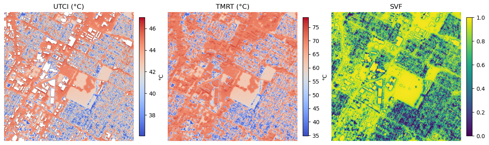

Note
This page was generated from a Jupyter notebook.
You can download it here: notebooks/Example_ownmetfile.ipynb
[2]:
from solweig_gpu import thermal_comfort
[4]:
thermal_comfort(
base_path='/Users/geo-ns36752/Downloads/SOLWEIG-GPU 2/Input_rasters/',
selected_date_str='2020-08-13',
building_dsm_filename='Building_DSM.tif',
dem_filename='DEM.tif',
trees_filename='Trees.tif',
landcover_filename='Landcover.tif',
tile_size=1000,
overlap=100,
use_own_met=True,
start_time='2020-08-13 06:00:00',
end_time='2020-08-14 05:00:00',
own_met_file='/Users/geo-ns36752/Downloads/SOLWEIG-GPU 2/Forcing_data/Own_file/ownmet.txt',
save_svf = True
)
Creating tiles for Building_DSM...
Created tile: /Users/geo-ns36752/Downloads/SOLWEIG-GPU 2/Input_rasters/Building_DSM/Building_DSM_0_0.tif
Created tile: /Users/geo-ns36752/Downloads/SOLWEIG-GPU 2/Input_rasters/Building_DSM/Building_DSM_0_1000.tif
Created tile: /Users/geo-ns36752/Downloads/SOLWEIG-GPU 2/Input_rasters/Building_DSM/Building_DSM_0_2000.tif
Created tile: /Users/geo-ns36752/Downloads/SOLWEIG-GPU 2/Input_rasters/Building_DSM/Building_DSM_0_3000.tif
Created tile: /Users/geo-ns36752/Downloads/SOLWEIG-GPU 2/Input_rasters/Building_DSM/Building_DSM_1000_0.tif
Created tile: /Users/geo-ns36752/Downloads/SOLWEIG-GPU 2/Input_rasters/Building_DSM/Building_DSM_1000_1000.tif
Created tile: /Users/geo-ns36752/Downloads/SOLWEIG-GPU 2/Input_rasters/Building_DSM/Building_DSM_1000_2000.tif
Created tile: /Users/geo-ns36752/Downloads/SOLWEIG-GPU 2/Input_rasters/Building_DSM/Building_DSM_1000_3000.tif
Created tile: /Users/geo-ns36752/Downloads/SOLWEIG-GPU 2/Input_rasters/Building_DSM/Building_DSM_2000_0.tif
Created tile: /Users/geo-ns36752/Downloads/SOLWEIG-GPU 2/Input_rasters/Building_DSM/Building_DSM_2000_1000.tif
Created tile: /Users/geo-ns36752/Downloads/SOLWEIG-GPU 2/Input_rasters/Building_DSM/Building_DSM_2000_2000.tif
Created tile: /Users/geo-ns36752/Downloads/SOLWEIG-GPU 2/Input_rasters/Building_DSM/Building_DSM_2000_3000.tif
Created tile: /Users/geo-ns36752/Downloads/SOLWEIG-GPU 2/Input_rasters/Building_DSM/Building_DSM_3000_0.tif
Created tile: /Users/geo-ns36752/Downloads/SOLWEIG-GPU 2/Input_rasters/Building_DSM/Building_DSM_3000_1000.tif
Created tile: /Users/geo-ns36752/Downloads/SOLWEIG-GPU 2/Input_rasters/Building_DSM/Building_DSM_3000_2000.tif
Created tile: /Users/geo-ns36752/Downloads/SOLWEIG-GPU 2/Input_rasters/Building_DSM/Building_DSM_3000_3000.tif
Creating tiles for DEM...
Created tile: /Users/geo-ns36752/Downloads/SOLWEIG-GPU 2/Input_rasters/DEM/DEM_0_0.tif
Created tile: /Users/geo-ns36752/Downloads/SOLWEIG-GPU 2/Input_rasters/DEM/DEM_0_1000.tif
Created tile: /Users/geo-ns36752/Downloads/SOLWEIG-GPU 2/Input_rasters/DEM/DEM_0_2000.tif
Created tile: /Users/geo-ns36752/Downloads/SOLWEIG-GPU 2/Input_rasters/DEM/DEM_0_3000.tif
Created tile: /Users/geo-ns36752/Downloads/SOLWEIG-GPU 2/Input_rasters/DEM/DEM_1000_0.tif
Created tile: /Users/geo-ns36752/Downloads/SOLWEIG-GPU 2/Input_rasters/DEM/DEM_1000_1000.tif
Created tile: /Users/geo-ns36752/Downloads/SOLWEIG-GPU 2/Input_rasters/DEM/DEM_1000_2000.tif
Created tile: /Users/geo-ns36752/Downloads/SOLWEIG-GPU 2/Input_rasters/DEM/DEM_1000_3000.tif
Created tile: /Users/geo-ns36752/Downloads/SOLWEIG-GPU 2/Input_rasters/DEM/DEM_2000_0.tif
Created tile: /Users/geo-ns36752/Downloads/SOLWEIG-GPU 2/Input_rasters/DEM/DEM_2000_1000.tif
Created tile: /Users/geo-ns36752/Downloads/SOLWEIG-GPU 2/Input_rasters/DEM/DEM_2000_2000.tif
Created tile: /Users/geo-ns36752/Downloads/SOLWEIG-GPU 2/Input_rasters/DEM/DEM_2000_3000.tif
Created tile: /Users/geo-ns36752/Downloads/SOLWEIG-GPU 2/Input_rasters/DEM/DEM_3000_0.tif
Created tile: /Users/geo-ns36752/Downloads/SOLWEIG-GPU 2/Input_rasters/DEM/DEM_3000_1000.tif
Created tile: /Users/geo-ns36752/Downloads/SOLWEIG-GPU 2/Input_rasters/DEM/DEM_3000_2000.tif
Created tile: /Users/geo-ns36752/Downloads/SOLWEIG-GPU 2/Input_rasters/DEM/DEM_3000_3000.tif
Creating tiles for Trees...
Created tile: /Users/geo-ns36752/Downloads/SOLWEIG-GPU 2/Input_rasters/Trees/Trees_0_0.tif
Created tile: /Users/geo-ns36752/Downloads/SOLWEIG-GPU 2/Input_rasters/Trees/Trees_0_1000.tif
Created tile: /Users/geo-ns36752/Downloads/SOLWEIG-GPU 2/Input_rasters/Trees/Trees_0_2000.tif
Created tile: /Users/geo-ns36752/Downloads/SOLWEIG-GPU 2/Input_rasters/Trees/Trees_0_3000.tif
Created tile: /Users/geo-ns36752/Downloads/SOLWEIG-GPU 2/Input_rasters/Trees/Trees_1000_0.tif
Created tile: /Users/geo-ns36752/Downloads/SOLWEIG-GPU 2/Input_rasters/Trees/Trees_1000_1000.tif
Created tile: /Users/geo-ns36752/Downloads/SOLWEIG-GPU 2/Input_rasters/Trees/Trees_1000_2000.tif
Created tile: /Users/geo-ns36752/Downloads/SOLWEIG-GPU 2/Input_rasters/Trees/Trees_1000_3000.tif
Created tile: /Users/geo-ns36752/Downloads/SOLWEIG-GPU 2/Input_rasters/Trees/Trees_2000_0.tif
Created tile: /Users/geo-ns36752/Downloads/SOLWEIG-GPU 2/Input_rasters/Trees/Trees_2000_1000.tif
Created tile: /Users/geo-ns36752/Downloads/SOLWEIG-GPU 2/Input_rasters/Trees/Trees_2000_2000.tif
Created tile: /Users/geo-ns36752/Downloads/SOLWEIG-GPU 2/Input_rasters/Trees/Trees_2000_3000.tif
Created tile: /Users/geo-ns36752/Downloads/SOLWEIG-GPU 2/Input_rasters/Trees/Trees_3000_0.tif
Created tile: /Users/geo-ns36752/Downloads/SOLWEIG-GPU 2/Input_rasters/Trees/Trees_3000_1000.tif
Created tile: /Users/geo-ns36752/Downloads/SOLWEIG-GPU 2/Input_rasters/Trees/Trees_3000_2000.tif
Created tile: /Users/geo-ns36752/Downloads/SOLWEIG-GPU 2/Input_rasters/Trees/Trees_3000_3000.tif
Creating tiles for Landcover...
Created tile: /Users/geo-ns36752/Downloads/SOLWEIG-GPU 2/Input_rasters/Landcover/Landcover_0_0.tif
Created tile: /Users/geo-ns36752/Downloads/SOLWEIG-GPU 2/Input_rasters/Landcover/Landcover_0_1000.tif
Created tile: /Users/geo-ns36752/Downloads/SOLWEIG-GPU 2/Input_rasters/Landcover/Landcover_0_2000.tif
Created tile: /Users/geo-ns36752/Downloads/SOLWEIG-GPU 2/Input_rasters/Landcover/Landcover_0_3000.tif
Created tile: /Users/geo-ns36752/Downloads/SOLWEIG-GPU 2/Input_rasters/Landcover/Landcover_1000_0.tif
Created tile: /Users/geo-ns36752/Downloads/SOLWEIG-GPU 2/Input_rasters/Landcover/Landcover_1000_1000.tif
Created tile: /Users/geo-ns36752/Downloads/SOLWEIG-GPU 2/Input_rasters/Landcover/Landcover_1000_2000.tif
Created tile: /Users/geo-ns36752/Downloads/SOLWEIG-GPU 2/Input_rasters/Landcover/Landcover_1000_3000.tif
Created tile: /Users/geo-ns36752/Downloads/SOLWEIG-GPU 2/Input_rasters/Landcover/Landcover_2000_0.tif
Created tile: /Users/geo-ns36752/Downloads/SOLWEIG-GPU 2/Input_rasters/Landcover/Landcover_2000_1000.tif
Created tile: /Users/geo-ns36752/Downloads/SOLWEIG-GPU 2/Input_rasters/Landcover/Landcover_2000_2000.tif
Created tile: /Users/geo-ns36752/Downloads/SOLWEIG-GPU 2/Input_rasters/Landcover/Landcover_2000_3000.tif
Created tile: /Users/geo-ns36752/Downloads/SOLWEIG-GPU 2/Input_rasters/Landcover/Landcover_3000_0.tif
Created tile: /Users/geo-ns36752/Downloads/SOLWEIG-GPU 2/Input_rasters/Landcover/Landcover_3000_1000.tif
Created tile: /Users/geo-ns36752/Downloads/SOLWEIG-GPU 2/Input_rasters/Landcover/Landcover_3000_2000.tif
Created tile: /Users/geo-ns36752/Downloads/SOLWEIG-GPU 2/Input_rasters/Landcover/Landcover_3000_3000.tif
Copied to /Users/geo-ns36752/Downloads/SOLWEIG-GPU 2/Input_rasters/metfiles/metfile_1000_2000.txt
Copied to /Users/geo-ns36752/Downloads/SOLWEIG-GPU 2/Input_rasters/metfiles/metfile_1000_0.txt
Copied to /Users/geo-ns36752/Downloads/SOLWEIG-GPU 2/Input_rasters/metfiles/metfile_3000_1000.txt
Copied to /Users/geo-ns36752/Downloads/SOLWEIG-GPU 2/Input_rasters/metfiles/metfile_2000_2000.txt
Copied to /Users/geo-ns36752/Downloads/SOLWEIG-GPU 2/Input_rasters/metfiles/metfile_3000_3000.txt
Copied to /Users/geo-ns36752/Downloads/SOLWEIG-GPU 2/Input_rasters/metfiles/metfile_0_2000.txt
Copied to /Users/geo-ns36752/Downloads/SOLWEIG-GPU 2/Input_rasters/metfiles/metfile_1000_1000.txt
Copied to /Users/geo-ns36752/Downloads/SOLWEIG-GPU 2/Input_rasters/metfiles/metfile_3000_0.txt
Copied to /Users/geo-ns36752/Downloads/SOLWEIG-GPU 2/Input_rasters/metfiles/metfile_2000_0.txt
Copied to /Users/geo-ns36752/Downloads/SOLWEIG-GPU 2/Input_rasters/metfiles/metfile_0_0.txt
Copied to /Users/geo-ns36752/Downloads/SOLWEIG-GPU 2/Input_rasters/metfiles/metfile_1000_3000.txt
Copied to /Users/geo-ns36752/Downloads/SOLWEIG-GPU 2/Input_rasters/metfiles/metfile_2000_3000.txt
Copied to /Users/geo-ns36752/Downloads/SOLWEIG-GPU 2/Input_rasters/metfiles/metfile_0_1000.txt
Copied to /Users/geo-ns36752/Downloads/SOLWEIG-GPU 2/Input_rasters/metfiles/metfile_0_3000.txt
Copied to /Users/geo-ns36752/Downloads/SOLWEIG-GPU 2/Input_rasters/metfiles/metfile_3000_2000.txt
Copied to /Users/geo-ns36752/Downloads/SOLWEIG-GPU 2/Input_rasters/metfiles/metfile_2000_1000.txt
Using 12 parallel workers
Computing Wall Height and Aspect: 100%|█████████████████████████████████████████████████████████████████████████████████████████████████████████████████████████████████| 16/16 [06:08<00:00, 23.04s/it]
Running Solweig ...
Attention! The land cover grid includes values (deciduous and/or conifer) not appropriate for the SOLWEIG-formatted land cover grid (should not include 3 or 4). Land cover under the vegetation is required. Setting the invalid landcover types to grass.
[INFO] Timezone: America/Chicago, UTC offset: -5.0 hours
Time taken to execute tile 0_0: 575.71 seconds
Attention! The land cover grid includes values (deciduous and/or conifer) not appropriate for the SOLWEIG-formatted land cover grid (should not include 3 or 4). Land cover under the vegetation is required. Setting the invalid landcover types to grass.
[INFO] Timezone: America/Chicago, UTC offset: -5.0 hours
Time taken to execute tile 0_1000: 447.20 seconds
Attention! The land cover grid includes values (deciduous and/or conifer) not appropriate for the SOLWEIG-formatted land cover grid (should not include 3 or 4). Land cover under the vegetation is required. Setting the invalid landcover types to grass.
[INFO] Timezone: America/Chicago, UTC offset: -5.0 hours
Time taken to execute tile 0_2000: 449.36 seconds
Attention! The land cover grid includes values (deciduous and/or conifer) not appropriate for the SOLWEIG-formatted land cover grid (should not include 3 or 4). Land cover under the vegetation is required. Setting the invalid landcover types to grass.
[INFO] Timezone: America/Chicago, UTC offset: -5.0 hours
Time taken to execute tile 0_3000: 210.91 seconds
Attention! The land cover grid includes values (deciduous and/or conifer) not appropriate for the SOLWEIG-formatted land cover grid (should not include 3 or 4). Land cover under the vegetation is required. Setting the invalid landcover types to grass.
[INFO] Timezone: America/Chicago, UTC offset: -5.0 hours
Time taken to execute tile 1000_0: 467.92 seconds
Attention! The land cover grid includes values (deciduous and/or conifer) not appropriate for the SOLWEIG-formatted land cover grid (should not include 3 or 4). Land cover under the vegetation is required. Setting the invalid landcover types to grass.
[INFO] Timezone: America/Chicago, UTC offset: -5.0 hours
Time taken to execute tile 1000_1000: 573.33 seconds
Attention! The land cover grid includes values (deciduous and/or conifer) not appropriate for the SOLWEIG-formatted land cover grid (should not include 3 or 4). Land cover under the vegetation is required. Setting the invalid landcover types to grass.
[INFO] Timezone: America/Chicago, UTC offset: -5.0 hours
Time taken to execute tile 1000_2000: 569.11 seconds
Attention! The land cover grid includes values (deciduous and/or conifer) not appropriate for the SOLWEIG-formatted land cover grid (should not include 3 or 4). Land cover under the vegetation is required. Setting the invalid landcover types to grass.
[INFO] Timezone: America/Chicago, UTC offset: -5.0 hours
Time taken to execute tile 1000_3000: 235.91 seconds
Attention! The land cover grid includes values (deciduous and/or conifer) not appropriate for the SOLWEIG-formatted land cover grid (should not include 3 or 4). Land cover under the vegetation is required. Setting the invalid landcover types to grass.
[INFO] Timezone: America/Chicago, UTC offset: -5.0 hours
Time taken to execute tile 2000_0: 580.89 seconds
Attention! The land cover grid includes values (deciduous and/or conifer) not appropriate for the SOLWEIG-formatted land cover grid (should not include 3 or 4). Land cover under the vegetation is required. Setting the invalid landcover types to grass.
[INFO] Timezone: America/Chicago, UTC offset: -5.0 hours
Time taken to execute tile 2000_1000: 493.07 seconds
Attention! The land cover grid includes values (deciduous and/or conifer) not appropriate for the SOLWEIG-formatted land cover grid (should not include 3 or 4). Land cover under the vegetation is required. Setting the invalid landcover types to grass.
[INFO] Timezone: America/Chicago, UTC offset: -5.0 hours
Time taken to execute tile 2000_2000: 501.91 seconds
Attention! The land cover grid includes values (deciduous and/or conifer) not appropriate for the SOLWEIG-formatted land cover grid (should not include 3 or 4). Land cover under the vegetation is required. Setting the invalid landcover types to grass.
[INFO] Timezone: America/Chicago, UTC offset: -5.0 hours
Time taken to execute tile 2000_3000: 209.15 seconds
Attention! The land cover grid includes values (deciduous and/or conifer) not appropriate for the SOLWEIG-formatted land cover grid (should not include 3 or 4). Land cover under the vegetation is required. Setting the invalid landcover types to grass.
[INFO] Timezone: America/Chicago, UTC offset: -5.0 hours
Time taken to execute tile 3000_0: 438.74 seconds
Attention! The land cover grid includes values (deciduous and/or conifer) not appropriate for the SOLWEIG-formatted land cover grid (should not include 3 or 4). Land cover under the vegetation is required. Setting the invalid landcover types to grass.
[INFO] Timezone: America/Chicago, UTC offset: -5.0 hours
Time taken to execute tile 3000_1000: 432.20 seconds
Attention! The land cover grid includes values (deciduous and/or conifer) not appropriate for the SOLWEIG-formatted land cover grid (should not include 3 or 4). Land cover under the vegetation is required. Setting the invalid landcover types to grass.
[INFO] Timezone: America/Chicago, UTC offset: -5.0 hours
Time taken to execute tile 3000_2000: 437.29 seconds
Attention! The land cover grid includes values (deciduous and/or conifer) not appropriate for the SOLWEIG-formatted land cover grid (should not include 3 or 4). Land cover under the vegetation is required. Setting the invalid landcover types to grass.
[INFO] Timezone: America/Chicago, UTC offset: -5.0 hours
Time taken to execute tile 3000_3000: 178.91 seconds
[8]:
import rasterio
import numpy as np
import matplotlib.pyplot as plt
from matplotlib.colors import TwoSlopeNorm
# ---- paths ----
utci_path = "/Users/geo-ns36752/Downloads/SOLWEIG-GPU 2/Input_rasters/Outputs/1000_2000/UTCI_1000_2000.tif"
tmrt_path = "/Users/geo-ns36752/Downloads/SOLWEIG-GPU 2/Input_rasters/Outputs/1000_2000/TMRT_1000_2000.tif"
svf_path = "/Users/geo-ns36752/Downloads/SOLWEIG-GPU 2/Input_rasters/Outputs/1000_2000/SVF_1000_2000.tif"
def read_band(path, preferred_band=15):
"""Read preferred_band if it exists; otherwise fall back to band 1 (useful for single-band rasters like SVF)."""
with rasterio.open(path) as src:
band = preferred_band if preferred_band <= src.count else 1
arr = src.read(band).astype(float)
# mask NoData
if src.nodata is not None:
arr = np.where(arr == src.nodata, np.nan, arr)
bounds = src.bounds
extent = (bounds.left, bounds.right, bounds.bottom, bounds.top)
return arr, extent
# read rasters (UTCI/TMRT often have multiple time bands; SVF is single-band)
utci, utci_extent = read_band(utci_path, preferred_band=15) # 15 = 3pm if bands are hourly starting at 1
tmrt, tmrt_extent = read_band(tmrt_path, preferred_band=15)
svf, svf_extent = read_band(svf_path, preferred_band=1) # force band 1 for SVF
# ---- colormaps / norms ----
utci_cmap = "coolwarm"
tmrt_cmap = "coolwarm"
svf_cmap = "viridis"
# ---- plot ----
fig, axes = plt.subplots(1, 3, figsize=(12, 5), constrained_layout=True)
im0 = axes[0].imshow(utci, extent=utci_extent, origin="upper",
cmap=utci_cmap, norm=utci_norm)
axes[0].set_title("UTCI (°C)")
axes[0].axis("off")
cbar0 = fig.colorbar(im0, ax=axes[0], fraction=0.046, pad=0.04)
cbar0.set_label("°C")
im1 = axes[1].imshow(tmrt, extent=tmrt_extent, origin="upper",
cmap=tmrt_cmap)
axes[1].set_title("TMRT (°C)")
axes[1].axis("off")
cbar1 = fig.colorbar(im1, ax=axes[1], fraction=0.046, pad=0.04)
cbar1.set_label("°C")
im2 = axes[2].imshow(svf, extent=svf_extent, origin="upper",
cmap=svf_cmap, vmin=0, vmax=1)
axes[2].set_title("SVF")
axes[2].axis("off")
cbar2 = fig.colorbar(im2, ax=axes[2], fraction=0.046, pad=0.04)
cbar2.set_label("")
plt.show()

[ ]: